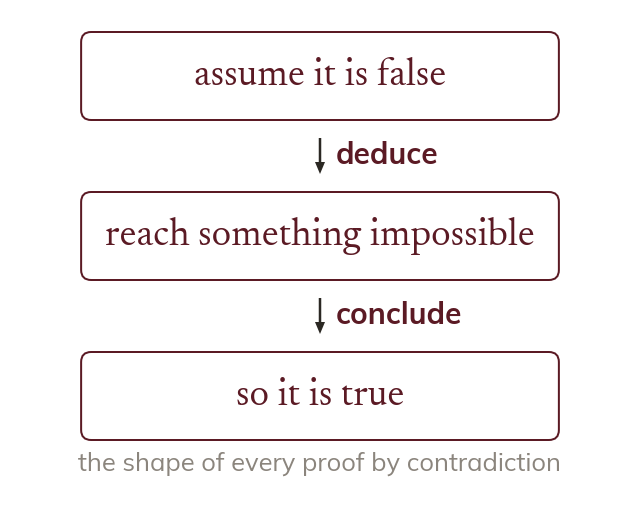
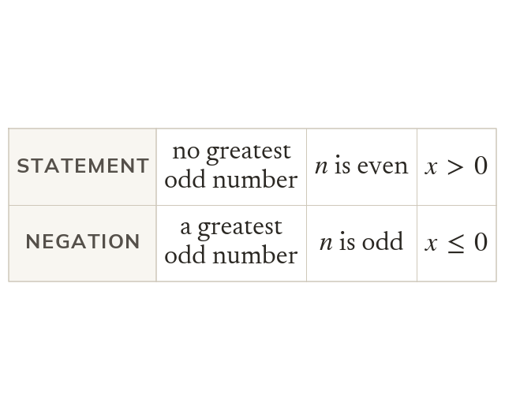
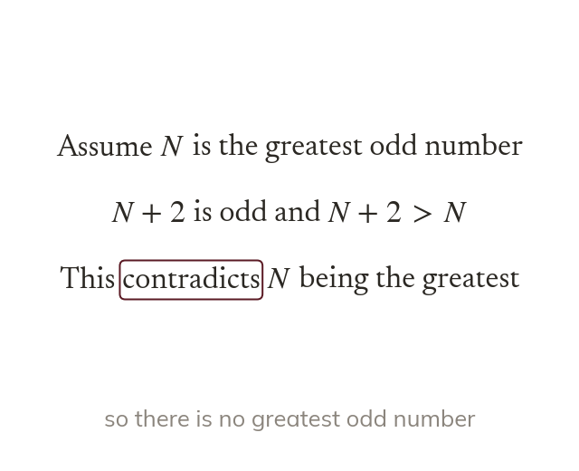
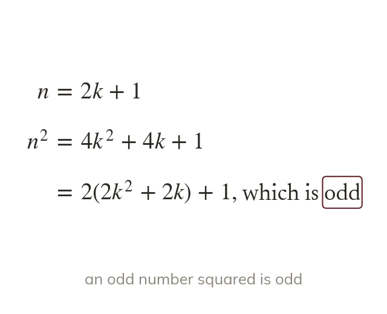
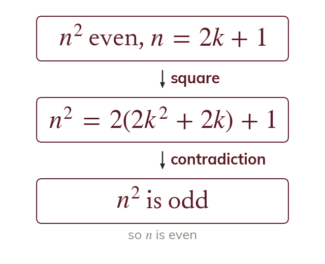
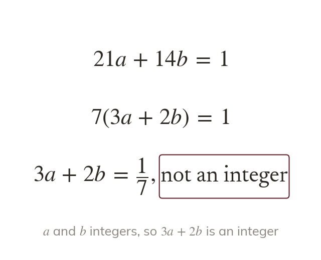

Assume the opposite
A proof by contradiction begins by assuming the statement is false. Careful logic from that assumption then reaches something impossible.
Some statements are easiest to prove by showing that their opposite cannot be true. This lesson sets up the method; the next lesson uses it for the irrationality of and the infinity of primes.
Work down the page at your own pace. Write every answer in your book first, then click to check it.
Read each card, then follow the worked examples one step at a time.

A proof by contradiction begins by assuming the statement is false. Careful logic from that assumption then reaches something impossible.

The assumption is the exact opposite of the statement. The opposite of is not

Assume is the greatest odd number. Then is odd and greater than which contradicts the assumption.
Pick an answer. If it's wrong, the feedback tells you which mistake it was.
Write the blanks in your book first, then tap each one to check.
Read each card, then follow the worked examples one step at a time.

An even number is and an odd number is for an integer Squaring an odd number gives which is odd.

To prove "if is even, then is even", assume is even and is odd. Squaring gives an odd which contradicts being even.

If for integers and then
So but must be an integer.
Pick an answer. If it's wrong, the feedback tells you which mistake it was.
Write the blanks in your book first, then tap each one to check.
Finished? Next lesson: 13.P1.1b Proving Irrationality and Infinitely Many Primes.
For each skill, tap the one that is true for you today. Your Revise pages start with anything you mark Not yet.
Your ratings are saved on this device only.